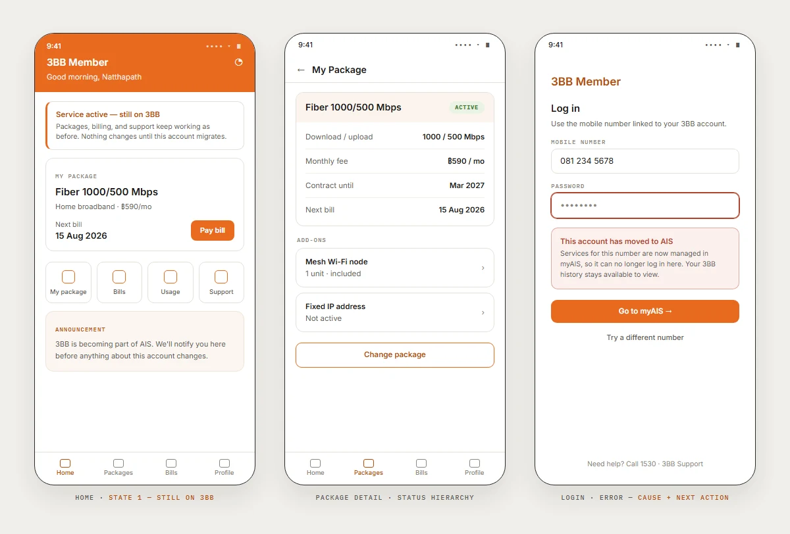
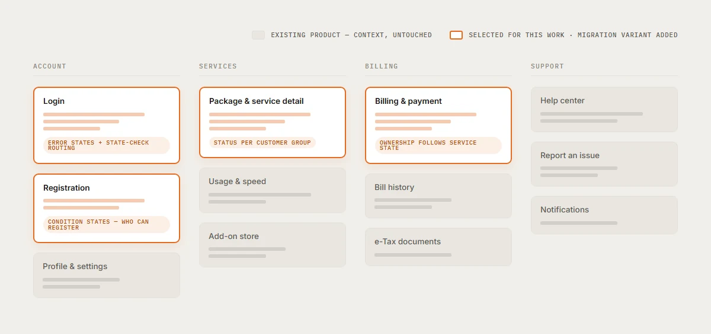

I designed selected app and web functions for 3BB Member during the 3BB → AIS transition. The product was already live, and its working file contained active, legacy, and migration-era flows. This case focuses on the service-state model used to give each customer the right status, explanation, and next action.
A live product, an inherited file containing several eras of work, and a migration that made the same screen mean different things for different customer groups.
I separated current behavior from legacy context, then translated the migration rule into complete states and reused familiar product patterns for each route.
Selected work shipped in the live app and web product. No migration-state usage data was available for this case study.
I clarified the current flow, mapped service-state routing and coverage, designed the interface states, and documented the implementation logic with CX, PM, Dev, and QA.
The working file contained active screens, older versions, and migration-era alternatives. I first separated current behavior from legacy context, then marked where migration actually changed the user's route. The requirement from CX became a three-state model:
"After migration, each customer can be in a different service state — the app has to show the right status, the right options, and the right next step, for every one of them."
Service & migration requirement, paraphrased — how work arrived on this projectPackages, billing, and support keep working exactly as before. Nothing changes until this account migrates.
Services now run on AIS. Manage packages and billing in myAIS — this app can no longer make changes for you.
Services stay on 3BB until the switch completes. We'll notify you here when it's done and what changes after.
Three different truths on the same home screen. The design bar: each one unmistakable at a glance.
Those three states became the routing rule: stay in 3BB Member, redirect to myAIS, or hold in a waiting state.
service_state = check(customer) ├─ still_3bb → stay · 3BB Member, full service ├─ migrated_ais → route · myAIS takes over └─ waiting → hold · status + what changes next
A business rule becomes a flow only when its states exist on screen. I mapped what the user needed to see at each step, then designed the flow, the screen states, and the interaction logic around it — in the app's inherited design language, so nothing felt like a second product.
Packages and billing for this account are now managed in myAIS. Your 3BB Member history stays available to view.
The dialog answers the three questions every interruption must answer: what happened, what it means for me, where I go next.
| Function | The hard state | Migration variant |
|---|---|---|
| Login | error states — clear copy, cause, next action | state check routes to the right home |
| Registration | condition states — who can register, and why not | migrated accounts directed to AIS |
| Billing | option states — what can be paid, where | billing ownership follows the service state |
| Package & service detail | status hierarchy — active, changing, ended | right status per customer group |
Where an existing pattern solved the problem, I reused it. Where a new service flow needed more, I extended the same visual and interaction language so the migration states still felt part of the product.


The handoff was clearest when CX, PM, Dev, and I aligned on the service rule and edge cases before polishing the screen.
Bring Dev into CX discussions from the start and map the inherited-versus-current boundary on day one. Earlier feasibility and a clearer source of truth would reduce rework later.
Working on something like this? natthapath.d@gmail.com·LinkedIn